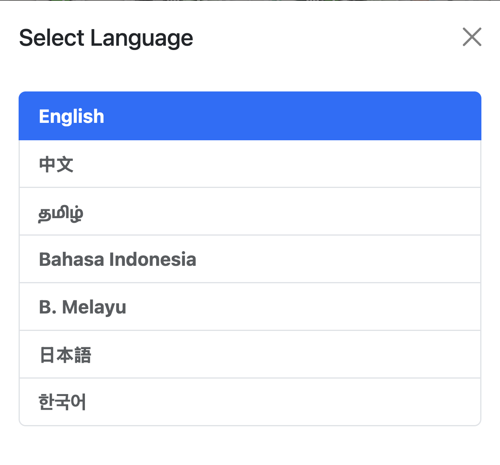
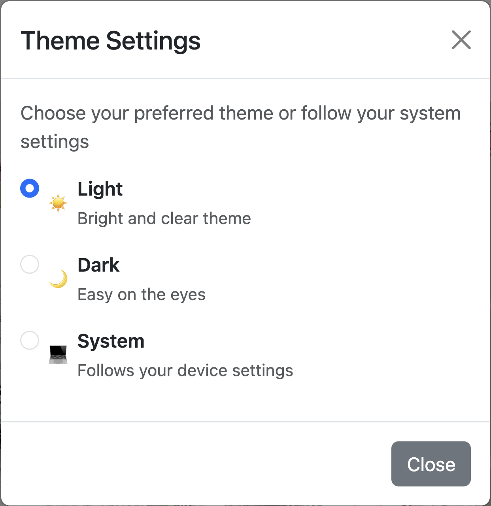
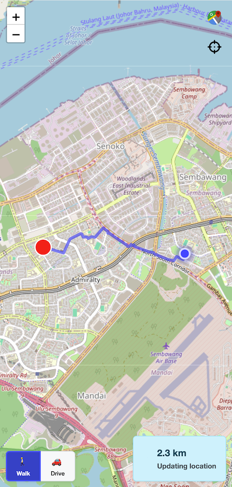
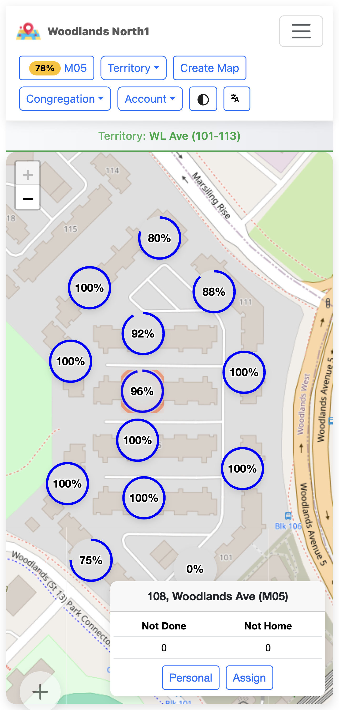

Features Overview¶
Introduction¶
Ministry Mapper is a comprehensive digital territory management platform designed for religious congregations. This page provides a detailed overview of all features and capabilities as of application version 2.7.2.
The platform is made up of two parts: a React web application that publishers, conductors and administrators use in the browser, and a Go/PocketBase backend that stores the data, enforces access control and runs the scheduled jobs. Everything below is available in all 8 interface languages.
🗺️ Territory Management¶
Organize Geographic Regions¶
Create and Manage Territories: - Create unlimited territories per congregation - Assign unique codes and descriptions - Organize maps within a territory with drag-and-drop sequencing - Track completion percentage automatically - Reset territory status to restart tracking - Move maps between territories easily (a map can only move to a territory in the same congregation)
Territory Boundaries: - Draw a territory boundary directly on the map — click to add each vertex, double-click or press Enter to close the shape - A boundary needs at least 3 points and accepts at most 25 - Backspace removes the last point; Escape cancels the whole drawing - The territory map view draws every boundary as a coloured polygon with the territory code and a progress-coloured percentage label at its centre, plus a badge counting territories that still have no boundary
Territory Statistics: - Aggregate completion tracking - Visual progress indicators - Real-time update of statistics — progress is recalculated the moment an address changes, not on a timer - Per-territory breakdowns - Territory progress is derived by summing the completed and total counts of the territory's maps, so a map with no countable addresses simply does not affect the percentage
Use Case: Divide your congregation's service area into manageable territories for organized field service work.
🏢 Map & Address Management¶
Interactive Location Tracking¶
Map Types:
1. Public Addresses (Multi-floor Buildings) - Support for multi-story buildings - Add/remove floors dynamically - Each floor contains multiple units - Automatic address code application to all floors - Floor-by-floor organization
2. Private Addresses (Single-story Residences) - Individual houses or standalone properties - Simpler structure without floor subdivision - Quick address entry - Can be viewed either as a card grid (List View) or as pins on a map (Map View)
Map Features: - Attach GPS coordinates for precise location - Add detailed descriptions - Sequence numbers for organized visiting - Visual map integration with Leaflet and OpenStreetMap-based tiles - Get directions to any address - Geolocation support
Address Operations: - Add/remove address codes - Resequence addresses for optimal routing - Bulk operations for efficiency - Copy addresses across floors - Rename and reorganize
Add Address On The Fly - Publishers can add missing addresses directly during the mapping process — no admin intervention required - A "+" card appears at the end of the address list on single-story maps as a quick-add entry point - Property Number is required, and a duplicate code is rejected with "Address {{code}} already exists in this territory map." - Ideal for congregations that are still building out their territory records - Administrators receive a daily digest email listing the addresses publishers added, so records added in the field can be reviewed

Household Type Is Required When Adding or Updating an Address - If the congregation has configured household options at all, at least one household type must be selected before an address can be saved — on the add-address form and on the update-status form - Leaving it empty shows "Please select at least one household type.", and the message clears as soon as a type is picked - The reason is arithmetic, not bureaucracy: an address with no household type is not countable, so it would never appear as still needing a call — not on the grid and not on the map - Congregations that have not configured any household options are unaffected; the field is simply not enforced
Choosing Household Types (Multi-Select With Cancel) - Household types are picked in a full dialog rather than a dropdown, so the list is comfortable to use on a phone - The dialog edits a draft: nothing is written until Done is pressed, and Done shows a live count of the current selection, e.g. "Done (3)" - ✅ Cancel discards the draft and leaves the saved value untouched - ✅ Pressing Escape or tapping outside the dialog behaves exactly like Cancel - ❌ No selection is ever committed on close — the only way to save is Done - Re-opening the dialog always re-seeds the draft from the saved value, so a previous cancel can never leak stale selections back in
Save a House's Location From the Phone - "Use my location" captures the device's GPS fix in a single tap; while it is working the button shows a spinner and reads "Getting location…" - If the fix cannot be obtained the app says "Unable to get your current location. Please check your browser settings." - "On map" still allows manual placement, with address search, tap-to-place and a recentre-on-me control - Saved coordinates are shown to 6 decimal places (roughly 0.1 m) in a fixed-height row so the form never jumps as the value appears - Available on landed-house (single-story) maps only - An address with no coordinates reads "No pin set" and is hidden from Map View entirely — there would be no way to reach it from a map with no pin. Map View therefore shows a note reading "{{count}} addresses need a pin" with the hint "Tap to set the first", which opens the first unpinned address - Works offline: the fix is taken from the device, and the save goes through the offline queue like any other publisher edit
Use Case: A publisher walking a landed-house territory can pin the houses as they go, and the next publisher gets a usable map view instead of a list of names.
📊 Unit/Household Tracking¶
Comprehensive Visit Status Management¶
Status Types:
| Status | Description | Impact on Progress |
|---|---|---|
| Not Done | Initial state, not yet visited | Counted in incomplete |
| Done | Successfully completed | Counted as complete |
| Not Home | No one home, can retry | Counted as complete after max tries |
| Do Not Call (DNC) | Household requests no visits | Excluded from counting |
| Invalid | Unit doesn't exist | Excluded from counting |
Not Home Tracking:
- Configurable maximum tries per congregation
- Automatic counter increment, shown as a small number on the envelope glyph
- Treated as "done" after max attempts
- A maximum of 0 (or less) means "no limit", in which case a not-home address never counts as completed by that route
- Prevents indefinite revisits
Completion Logic:
Complete when:
- Status = Done, OR
- Status = Not Home AND tries >= max_tries
Total countable = done + not done + not home
(Do Not Call and Invalid are excluded)
Progress % = round(Completed / Total Countable × 100)
Only addresses carrying at least one countable household option are counted at all, and the percentage is rounded, not truncated — 199 of 200 reads as 100%, not 99%.
Household Options: - Customizable address classifications - Countable vs non-countable types - Default options for new addresses - Multiple options per address - Affects progress calculations
Visit Notes: - Add detailed notes per address - Automatic timestamp tracking - Track who made updates — the actor is derived on the server from the signed-in user or the assignment's publisher name, never sent by the browser - Email digests for note changes - Historical note viewing
🧭 Finishing a Map (Endgame Helpers)¶
Getting to the Last Few Addresses¶
The hardest part of a map is not the first half — it is finding the seven addresses still outstanding in a 300-unit block. Ministry Mapper therefore holds a set of helpers back until a map is nearly finished, so they appear exactly when they are useful and never add clutter before that.
1. The "X to go" Jump Button - A floating pill in the bottom-right corner of the grid, labelled "{{count}} to go" (for example "7 to go") - Each tap scrolls to the next address that still needs a call and rings it, so it is obvious which one you were taken to - The tour follows the grid's own order — top floor first, then downwards, left to right — and wraps around to the first outstanding address after the last one - Your place in the tour is kept even after you complete the address you were taken to, so tapping again moves forward rather than restarting - The ring is not sticky: it disappears as soon as that address is done, so a finished map is left unmarked - Only the grid scrolls; the surrounding page stays put. The scroll is instant rather than animated for anyone who has asked their device to reduce motion - It only appears once the map is at least 90% done, and it disappears again at 100% when there is nothing left to jump to
Why the 90% gate
Earlier releases showed this button from the first visit, where it read "47 to go" on a map at 6% — a number that told a publisher nothing they could not see. It is a finishing tool, so it now waits for the finish.
2. Per-Floor Outstanding Counts - On a multi-floor map, a small badge next to each floor number shows how many addresses on that floor still need a call - The badge is announced to screen readers as "{{count}} still to call on this floor" - ✅ Shown only in the same endgame window as the jump button — a map at 6% no longer puts a number beside every floor - ❌ Never shown on single-floor maps, where the floor number itself carries no meaning
3. Remaining-Work Breakdown - Under the progress bar on the publisher map, the endgame also reveals the split of what is left, e.g. "12 not done · 3 not home", so a publisher can tell "nobody has knocked here" apart from "nobody was in"
Use Case: A publisher returning to finish a block taps the pill repeatedly and is walked straight through the remaining calls, instead of scrolling a wall of completed units looking for gaps.
🔗 Assignment System (Publisher Links)¶
Secure, Time-Limited Access¶
Link Features: - Time-Limited: Configurable expiry per congregation (default 24 hours) - Token-Based: The link carries a 25-character token, which is the assignment record's own id - No Account Needed: Publishers access via link only — no login, no password, no user record - Scoped to One Map: A link grants access to exactly one map. A request naming any other map is refused - Two Types: - Normal assignments for regular territory work - Personal assignments for personal ministry
Intelligent Assignment Algorithm:
When a conductor or administrator requests a Quick Link, the server picks the map for them. The blurb in the app describes it as "Assigns the best available territory map nearby — balancing workload, distance, and completion progress." Under that sentence are four deterministic passes over the territory's maps:
- Distance is measured first
- The straight-line (haversine) distance from the requester's current position to each map is computed in metres
-
Maps with no usable coordinates are excluded from the selection entirely
-
Fewest active assignments wins
- Among the maps with usable coordinates, only those tied for the lowest number of active assignments stay in contention
-
This is what prevents the same map being handed to five publishers on a Saturday morning
-
Then the nearest of those
-
Within that cohort, the smallest distance wins
-
Progress breaks a near-tie
- Maps within 50 metres of the nearest candidate are treated as equally close, and among them the map with the lowest completion progress is chosen
- So when two blocks are effectively next to each other, the less-worked one is assigned
Because every pass is deterministic, the same request from the same place produces the same answer — there is no randomness in territory allocation.
Assignment Workflow:
1. Conductor generates an assignment link (Quick Link, or Assign on a specific map)
2. Link shared with publisher (share sheet, messaging app, email)
3. Publisher opens /map/:id — the token in the URL is the credential
4. Server validates the token, its map and its expiry on every request
5. Publisher updates address status; changes appear live for everyone
6. Link expires automatically at its expiry time
7. Expired links are cleaned up by a background job
Two-Step Assign-and-Share
Creating a link and sharing it are deliberately two separate steps:
- Step 1 — confirm the slip. Pick an expiry date (personal links only; the earliest allowed is tomorrow) and enter the publisher's name, which is required. Normal assignments use the congregation's configured expiry.
- Step 2 — "Map link is ready". The same panel becomes a summary: the map name, the link type, the territory, "Assigned to {name}", the expiry, the not-done/not-home breakdown — and, when applicable, an amber "Already assigned" warning listing up to three publishers who already hold a link to this map (with "+{{count}} more" beyond that). A Share button finishes the job.
Why it is two steps and not one
Browsers only allow the share sheet and the clipboard to open inside the brief window created by the user's own tap. The old single-step flow created the assignment over the network between the tap and the share sheet, and on a slow connection the browser silently refused to open the sheet — most often Chrome on iPhone. Splitting the flow means the Share button does nothing but share. Where the browser cannot share at all, the button copies the link instead.
Copy an Assigned Link - Every active link in the assignments list has a Copy link button beside its delete button - It copies the bare URL only — no accompanying message — so the link can be pasted anywhere - A "Link copied" confirmation appears on success
Assignment Management: - View active assignments per map, opened from the count badge beside Assign/Personal or from Account → Assignments in the sidebar - Each row shows who assigned it, who it was assigned to, when it was created and when it expires - Open the link in a new tab, copy it, or delete it - Deleting a link takes effect immediately and removes the row; deleting the last link closes the list - Automatic cleanup of expired links (every 5 minutes) - Assignment grants, removals and expiries are recorded in an audit log
Expired Links Are Enforced Everywhere
A link that has expired stops working through four independent detectors, all of which land on the same screen — "This link has expired ⌛" with "Please close this tab.":
- The app compares the expiry against the current time when the link is opened
- The server rejects the request outright, which the app treats as an expired link rather than a lost session
- The live countdown in the top bar reaching zero expires the link in place, mid-session
- A permanent authorization failure while flushing queued offline edits expires the link too
Expiring a link also purges its cached copy from the device, so an expired link cannot be served from the local cache.
Link Expiry Countdown - The publisher's top bar shows a live Expires countdown - It changes tone as the deadline approaches: amber within the last hour, red and pulsing within the last 15 minutes - The format adapts too — days and hours far out, minutes and seconds at the end — and so does the tick rate, which slows down when there is no need for a per-second update (a per-second timer running for hours is a real battery cost on a phone)
Map links bypass login — treat them like keys
Anyone who holds a map link has access to that map, without signing in. Do not post map links to public statuses or stories (for example WhatsApp Status), and do not share them in group chats beyond the publishers who need them.
If a link is posted publicly, remove the post immediately and tell a conductor or administrator so the link can be deleted and reissued. Administrators can shrink the risk window by shortening the congregation's link expiry.
🔀 Working Through a Territory's Maps¶
Sorting and Scanning the Map List¶
Sortable Map List
The territory's map list can be ordered three ways, chosen from a dropdown beside the list/map toggle:
| Mode | What it does |
|---|---|
| Sequence | The territory's own configured order. This is the default |
| Progress | Least-complete maps first, so the work that needs attention rises to the top |
| Proximity | Nearest maps first, based on the device's current location |
- Proximity needs location permission. If the location cannot be obtained the app warns "Could not get your location. Check location permissions and try again." and stays on the current sort rather than silently reordering nothing
- If Proximity was the saved choice and location is refused on a later visit, the list quietly falls back to Sequence
- Nothing is requested from the device until Proximity is actually chosen
- In Proximity mode each map shows its distance — "450 m" below a kilometre, "3.9 km" above it. Maps without coordinates sort to the end and show no distance
- The chosen sort is remembered per device
- The sort control appears only when a territory is selected and the list (not map) view is showing
Not-Done and Not-Home Counts on Each Map Row - Each map row can show a two-line breakdown: Not Done and Not Home, with right-aligned figures - Each line appears only when its count is above zero, and the whole block disappears when both are zero — a finished map stays visually quiet - The counts are computed on the server and stored with the map, so they cost nothing to display and are identical for everyone, including publishers opening a link
Use Case: A conductor standing in a territory switches the list to Proximity to see what is within walking distance, then to Progress to find the block that has been neglected for a month.
👥 User Management & Access Control¶
Role-Based Permission System¶
Three congregation roles — plus one link-based access path.
A user's authority comes from a role record attached to a specific congregation, and there are exactly three role values:
| Role | Value stored |
|---|---|
| Read-Only | read_only |
| Conductor | conductor |
| Administrator | administrator |
"Publisher" is not a role. A publisher has no user account, no password and no role record. A publisher is simply someone holding a valid assignment link, and the link itself is the credential. That is a separate access path rather than a fourth rung on the same ladder, which is why it is described on its own below.
Removing someone's access means deleting their role record for that congregation; there is no "no access" role to assign. A single user can hold different roles in different congregations.
1. Read-Only¶
Access Method: User account with the read_only role
Permissions: - ✅ View all congregation territories, maps and address grids - ✅ Switch between list and map views, and sort the map list - ✅ Get directions to an address - ✅ Read and post messages - ❌ Cannot create or update addresses - ❌ Cannot create assignment links - ❌ Cannot create, reset or delete territories - ❌ Cannot manage users or congregation settings
Use Case: Observers, auditors, service committee members
2. Conductor¶
Access Method: User account with the conductor role
Permissions: - ✅ Everything Read-Only can do - ✅ Create and update addresses, including the quick-add "+" card on single-story maps - ✅ Reset a territory's status - ✅ Delete a territory - ✅ Create assignment links — Quick Link and the per-map Assign button - ✅ View and delete the assignments list - ❌ Cannot create a territory, add a map, or use the Manage group of actions (rename, change boundary, reorder maps, change details) - ❌ Cannot create personal links - ❌ Cannot manage user roles, invite users or delete accounts - ❌ Cannot configure congregation settings or household options - ❌ Cannot delete a floor or a unit column from a map
Conductors and territories
A conductor can reset and delete territories, and can create and update addresses. Anywhere the documentation has previously said a conductor cannot do these things, this page is the correct one — those permissions are granted by the server to both conductors and administrators. What a conductor cannot do is create a new territory or change its details, boundary or map order.
Use Case: Field service overseers and territory coordinators who hand out territory for the week
3. Administrator¶
Access Method: User account with the administrator role
Permissions: - ✅ Everything Conductor can do - ✅ Create territories and maps; change a map's name, location, territory and sequence - ✅ Add and remove floors, add and delete unit columns, resequence address codes - ✅ Reset a map's status and delete a map - ✅ Create personal links as well as normal assignment links - ✅ Invite users, grant and change roles, and remove access - ✅ Configure congregation settings, including maximum not-home tries and link expiry - ✅ Create and reorder household options - ✅ Pin, mark read and delete messages - ✅ Generate an activity report on demand
Use Case: Territory servants and system administrators
Publisher Access (Link-Based, No Account)¶
Access Method: A valid, unexpired assignment link. No sign-in, no user record, no role
Permissions: - ✅ View the single map the link was issued for - ✅ Update address and unit status, and record not-home tries - ✅ Add and edit address notes - ✅ Pin a house's location on single-story maps - ✅ Add a missing address on single-story maps - ✅ Send feedback messages, and read pinned instructions - ✅ Get directions, switch language and switch theme - ❌ Cannot see any other map or territory - ❌ Cannot see the congregation's settings, users or reports - ❌ Cannot create or manage assignment links
How it is enforced: the link is presented as a header on every request and re-validated against its map and expiry each time. A link takes precedence over any signed-in session in the same browser — if the link is invalid the request is refused rather than falling back to the account's own authority, so a link-scoped session can never quietly widen into an administrator one.
Use Case: Field service publishers working a territory for the day
Capability Summary¶
| Capability | Read-Only | Conductor | Administrator |
|---|---|---|---|
| View territories, maps and grids; sort; directions; messages | ✅ | ✅ | ✅ |
| Create or update an address | ❌ | ✅ | ✅ |
| Quick Link, Assign link, assignments list | ❌ | ✅ | ✅ |
| Reset a territory, delete a territory | ❌ | ✅ | ✅ |
| Create a territory, New Map, Manage group | ❌ | ❌ | ✅ |
| Personal link | ❌ | ❌ | ✅ |
| Map row actions, delete a floor or unit | ❌ | ❌ | ✅ |
| Congregation settings, household options, users, reports | ❌ | ❌ | ✅ |
User Account Management¶
Features: - Email-based authentication - Email verification required before the app can be used - Password reset by email - OAuth2 Google sign-in - Optional one-time password (OTP) as a second factor - Account disable/enable - Last login tracking - Multi-congregation support (different roles per congregation) - Role grants, changes and revocations are written to an audit log
🛠️ Congregation Settings¶
Customizable Configuration¶
Core Settings:
1. Maximum Not-Home Tries
- Set how many "not home" visits before an address counts as complete
- Typical: 2–3 tries
- Affects progress calculations
- Congregation-specific; a value of 0 means no limit
2. Assignment Link Expiry - Configure how long links remain valid - Default: 24 hours - Customizable per congregation, and a change takes effect immediately - Automatic cleanup of expired links
3. Household Options - Create custom address classifications - Examples: "Residential", "Business", "High-rise", "Language: Spanish" - Mark options as "countable" (affects completion %) - Set exactly one default option for new addresses - Reorder with drag-and-drop - Codes are validated for uniqueness, and deleting an option re-points the addresses that used it to the default rather than leaving them blank
4. Regional Settings - Timezone configuration (20 IANA timezones) - Country/region selection (13 regions) - Affects date calculations and reports
💬 Communication & Messaging¶
In-App Communication System¶
Message Types:
1. Publisher Messages - From publishers to conductors/admins - Attached to specific maps - Territory-specific feedback - Real-time delivery
2. Conductor Messages - Administrative communications - Map-specific instructions - Coordination messages
3. Admin Messages - Can be pinned for visibility - Read status tracking - Important announcements - Broadcast to publishers
4. Pinned Messages - Remain visible until unpinned - Read tracking - Auto-email to relevant users - Priority display
Message Thread: - Chat-style thread with author initials, 📌 Pinned and Read badges - Auto-scrolls to the newest message - ⌘/Ctrl + Enter sends - Marking read, pinning and deleting are administrator actions
Email Notifications:
Automated email digests sent for: - Every 30 minutes: Unread messages to administrators - Every 30 minutes: Pinned admin instructions to publishers - Every hour: Note updates to administrators - Daily: Addresses added in the field, to administrators - Monthly: Congregation reports with Excel attachment
Email Templates: - Professional HTML templates - Mobile-responsive design - Includes relevant links back to the map - Rendered server-side from templates shipped with the backend
🔄 Real-Time Collaboration¶
Live Data Synchronization¶
Real-Time Features:
SSE Subscriptions: - Live updates via Server-Sent Events (SSE) — there are no WebSockets anywhere in the platform - Automatic reconnection with backoff, and resubscription when the tab regains focus - Low latency (<100ms typical) - Publishers receive realtime updates too: the link credential is passed explicitly with each subscription
Event Batching: - Bursts of events are coalesced into a single update pass roughly every 100 ms - This matters for bulk operations: resetting a 300-unit map emits one event per address, and without batching the grid would re-render hundreds of times - Repairs performed by maintenance commands deliberately do not broadcast, so publishers working a map are not spammed by a renumbering
Concurrent Editing: - Multiple users can work simultaneously - Last-write-wins strategy - Timestamp-based resolution
Automatic Refresh: - Data updates immediately when changed - No manual page refresh needed - Visual indicators for updates - Optimistic UI updates
Visibility Detection: - Automatically refreshes when the tab becomes visible - Saves bandwidth when the tab is hidden - Prevents stale data
Collaboration Scenarios: - Admin creates territory while conductor viewing list → Instantly appears - Publisher marks units complete → Admin sees progress update live - Multiple conductors managing different territories → No conflicts - Real-time statistics updates as work progresses
📶 Connectivity, Offline Behaviour & Smart Sync¶
What Actually Works Without a Connection¶
Ministry Mapper is an online application with a genuine, but deliberately limited, offline story. The honest summary:
Reading — falls back to a local cache - If the address list cannot be fetched, the app serves the last copy it stored on the device and re-applies any of your own edits that are still waiting to be sent, so you see your work rather than a stale server snapshot - The publisher link payload is cached the same way, with a 7-day lifetime - ✅ You can keep working a map you had already opened - ❌ You cannot open a map for the first time while offline
Writing — queued, but for publisher address updates only - Smart Sync queues publisher address updates locally and sends them when the connection returns - ✅ Status changes, not-home tries, notes, household types and pinned coordinates on a publisher map are all queued - ❌ Administrator actions are not queued — creating territories or maps, resetting, deleting, changing settings, managing users and generating reports all require a live connection - ❌ The queue is unavailable entirely when the browser blocks local database storage (see below), in which case writes go straight to the server and fail visibly if the network is down
Smart Sync in detail - A 📤 badge in the navigation bar counts the updates still in flight - Each unsynced address carries a small orange dot. Both indicators wait 300 ms before appearing, so a normal fast save never flashes a warning - One queued update is kept per address — saving the same address twice replaces the earlier entry rather than queueing both, and the original "before" state is preserved so a second offline edit cannot undo the first edit's intent - Retries use exponential backoff with random jitter, so hundreds of publishers reconnecting at the same moment do not all retry in the same instant - Errors that can never succeed (rejected, missing, or invalid) are dropped rather than retried forever, and the app says so: "{{count}} edit(s) could not be saved and were discarded." - If the session or link expires while edits are queued, you are told "Your session expired. Please sign in again — your offline edits are saved locally." — the queue is not thrown away - A queued edit survives closing the tab or the app being killed
Graceful degradation when local storage is blocked - Some browsers — Safari in Private Browsing most notably — provide no local database at all - The app detects this and switches to direct mode: every save goes straight to the server, errors surface immediately in the dialog, and the app remains fully usable - The only thing lost is the offline queue and the optimistic display that depends on it - If a second tab is holding the local database open during an upgrade, the app asks you to "App update pending. Please close other open tabs to continue." rather than failing silently
Connection status - A pill in the bottom-right corner reports "No internet connection" or "Weak connection", announced politely to screen readers - The publisher map's navigation row dims and stops responding while offline, so nothing is tapped in the hope that it will work - The app polls a lightweight health endpoint rather than guessing from the browser's own online flag, and it polls less often on devices that give no network information — frequent polling keeps the mobile radio awake and is a real battery cost
Use Case: A publisher in a lift lobby with no signal keeps marking units; the moment they step outside, everything uploads without them thinking about it.
📱 Progressive Web App (PWA)¶
Native App Experience¶
Installable — installation is supported again
Installing the app was previously disabled and actively discouraged, because an installed copy could get stuck on an old version and there was no reliable way to notice. That has been addressed, and installing is supported again — although the browser remains the recommended primary experience.
Desktop Installation:
Mobile Installation:
iOS Safari: Visit URL → Share → "Add to Home Screen"
Android Chrome: Visit URL → Menu → "Install app" / "Add to Home screen"
How Staleness Is Now Caught
Three independent mechanisms, so no single failure leaves an installed copy behind:
- Service worker takeover — when a new version takes control of an already-running app, the app is told immediately (the very first install is ignored, since that is not an update)
- Focus check — when the tab or window becomes visible again, the app asks for an update check, throttled to once every 5 minutes and skipped while offline
- Version file backstop — the app compares its own compiled-in version against a small version file on the server. This exists because a frozen or suspended installed window may never fire either of the first two signals; the throttle is deliberately bypassed when the app is resumed from the app switcher, which is precisely the moment staleness must be caught
When a new version is found, a persistent "Update Available" notice appears with "Reload to get the latest updates." and a Reload action. If a stale code chunk fails to load, the app reloads itself once and then stops trying, so a genuinely missing file surfaces as an error instead of an endless reload loop.
Google Sign-In Works in an Installed App - Signing in with Google from an installed (home-screen) copy previously failed on iOS: the sign-in was waiting for a response on a live channel, and iOS suspends the app while Google's own screen is in front, which aborted the login - Sign-in now uses a full-page redirect with the handshake parked locally and completed on return, so suspension is harmless - Dismissing Google's screen is treated as a choice, not an error — cancelling is silent, with no error message
Offline Support: - Static assets cached by the service worker - Cached data remains viewable when offline, with your own pending edits applied on top - Publisher address updates are queued and sent when the connection returns - Administrator actions require a live connection - See Connectivity, Offline Behaviour & Smart Sync above for exactly what is and is not covered
Performance Benefits: - Faster load times (cached assets) - Reduced data usage - Works on slow connections - Smooth animations
Native Features: - Share sheet integration for assignment links, with a clipboard fallback - Standalone (full-screen) display with a custom icon - Push notifications are not implemented
🌍 Internationalization¶
Multi-Language Support¶
Supported Languages (8):
| Language | Code | In-app label |
|---|---|---|
| English | en |
English |
| Spanish | es |
Español |
| Chinese | zh |
中文 |
| Tamil | ta |
தமிழ் |
| Indonesian | id |
Bahasa Indonesia |
| Malay | ms |
B. Melayu |
| Japanese | ja |
日本語 |
| Korean | ko |
한국어 |
i18n Features: - Language is chosen inside the app — no browser settings to change and no page reload. There is a Language button in the admin sidebar footer, on the sign-in screen (so the language can be changed before signing in) and in the publisher map's bottom navigation, where it also shows the language currently in use - The choice is remembered per device - Complete UI translation — every interface string exists in all 8 languages - Each language is downloaded on demand, so a user only ever fetches the one they use - Content coming from the server, such as a map's description, can itself be stored per language and falls back sensibly — the exact language first, then the base language, then English

Use Case: A congregation whose publishers read four different languages can hand out one link, and each publisher sees the map in their own language.
📣 Release Notes & What's New¶
Targeted, In-App Changelog¶
What's New Modal: - New releases are announced in an in-app "What's New" panel, shown automatically the first time a user opens the app after an update - The panel is translated into all 8 languages - Each item carries a coloured type chip: New, Fix, Improved or Announcement, and the most recent release is marked Latest - A release can also carry a warning notice and a screenshot - Release History is available on demand from the sidebar footer, showing the ten most recent releases
Audience Targeting: - Individual items can be tagged for administrators or for publishers, and an untagged item is shown to both - The audience is inferred from where the reader is: a publisher map page gets the publisher list, the admin app gets the admin list - Seen-state is tracked separately per audience, so a publisher who is also an administrator does not miss admin items because they already read the publisher ones, or vice versa - Release-level notices and screenshots are always shown to both audiences — they are not targetable - A first-time reader sees only the latest release rather than the entire back catalogue
Use Case: An administrator learns about the new household-option validation; a publisher opening a link the same day sees only the items that change what they do.
🌗 Themes & Appearance¶
Light, Dark, System — and Five Colour Themes¶
Theme Modes: - ☀️ Light — "Bright and clear theme" - 🌙 Dark — "Easy on the eyes" - 💻 System — "Follows your device settings" (the default)
Colour Themes:
Independently of light/dark, the app's accent palette can be switched between five named themes:
| Theme | Character |
|---|---|
| Classic | The default neutral palette |
| Tangerine | Warm orange |
| Perpetuity | Teal |
| Cosmic Night | Violet |
| Mocha Mousse | Muted brown |
How it works: - Open the palette icon — in the admin sidebar footer, on the sign-in screen, or in the publisher map's bottom navigation — to reach Theme Settings, headed "Choose your preferred theme or follow your system settings", with the five colour swatches under a Color heading - There is no Save button. A tap applies instantly and is remembered on that device - The chosen theme is applied before the app renders, so there is no flash of the wrong theme on load - Selecting System keeps following the device, including a change made while the app is open
Status colours never change
The status symbols — the green Done tick, the red Do Not Call sign, the violet Invalid mark, the amber note flag, the not-home envelope, the orange pending-sync dot and the map markers — deliberately keep the same fixed colours in every theme. Those colours carry meaning, and a publisher glancing at a grid must not have to re-learn them because someone picked a different accent. Only the light/dark variants of those colours differ.

Benefits: - Reduced eye strain - Better battery life (OLED screens) - A congregation can pick a look without any code change or deployment
📈 Reporting & Analytics¶
Comprehensive Statistics¶
Monthly Congregation Reports: - Schedule: Monthly, on the 1st - Period: the previous full calendar month - Format: Excel workbook (.xlsx) attached to an HTML email - Delivery: Email to administrators
On-Demand Reports: - An administrator can generate a report at any time from Congregation → Generate Report - On-demand reports cover a rolling 30 days ending today, not a calendar month - The request is accepted immediately and the workbook is emailed to the requesting administrator when it is ready: "Report generation started. You will receive an email shortly."
Report Contents:
1. Congregation Overview - Congregation name and details - Reporting period - Overall statistics
2. Territory Breakdown - Completion percentage per territory - Number of maps per territory - Address distribution - Status changes recorded during the period
3. Address Statistics - Total addresses by type - Status distribution (done, not done, not home, DNC, invalid) - Countable vs non-countable breakdown
4. Not-Home Standing - Addresses that have exhausted the congregation's try limit - Addresses still being retried - Addresses untouched for more than two weeks
5. Map Health - Maps with work outstanding but no progress at all - Completed maps - Maps with the highest Do-Not-Call counts
Excel Features: - Professional formatting - One sheet per view of the data - Pivot-ready data - Print-friendly layout
Real-Time Dashboard: - Live statistics in the admin app - Territory completion tracking - Address status distribution - Active assignment monitoring
🤖 AI-Generated Summaries¶
Plain-Language Overviews of the Numbers¶
Ministry Mapper can attach a short, written summary to four different emails, produced by a language model from the data the email already contains.
Provider and model: OpenAI, model gpt-5.4-mini, called in JSON mode with a low temperature and a 90-second time limit so a slow response can never hold up an email.
The four summaries:
1. Territory Activity Report Summary - Attached to the monthly report and to on-demand reports - Written in the voice of the congregation's territory servant, addressed to the service overseer and the elders - Produces three sections: what was covered, an analysis per territory, and a conclusion - Draws on the report's own analytics: per-territory progress and an estimate of the months remaining, congregation-wide status changes with the busiest day, per-territory activity for the period, how not-home addresses are standing, and map health - Instructed to cite specific numbers, never to invent data, and never to make assignment recommendations
2. Messages Digest Overview - Summarizes the publisher feedback messages in a congregation's message digest - Produces an overview plus key themes, including action items such as address-data corrections that keep coming up
3. Notes Digest Overview - Summarizes recently changed property notes for a congregation — dogs, gate access, intercom codes, parking, renovations, vacancies - Produces an overview only
4. Instructions Digest Overview - Summarizes an administrator's pinned instructions for a single map, for the publishers who receive them - Produces an overview only
Enabling it takes two things, and both are required:
- An OpenAI API key configured in the deployment environment (
OPENAI_API_KEY) - The feature flag
enable-report-ai-summaryturned on
AI summaries are off by default
Unlike the background-job flags, enable-report-ai-summary defaults to disabled when no feature-flag service is configured. Setting OPENAI_API_KEY on its own is not enough to switch the feature on — the flag must be enabled as well. This is deliberate: sending congregation text to a third party should be an explicit decision.
It fails quietly by design. If the key is missing, the flag is off, the API returns an error, or the response cannot be parsed, the email is sent without the summary section. Nothing is delayed and nothing is lost.
What is sent to OpenAI
When the feature is enabled, the text being summarized leaves the deployment — including the text of publisher feedback messages and property notes. Congregations that would rather that text never left their own server should leave the flag off, in which case no data is sent at all.
🔐 Security Features¶
Enterprise-Grade Security¶
Authentication Methods:
1. Email/Password - Bcrypt password hashing (cost: 10) - Minimum 6 characters - Email verification required - Password reset via email
2. OAuth2 (Google) - PKCE flow for security - Automatic user creation - No password management needed - Full-page redirect handshake, so it also works in an installed app
3. One-Time Password (OTP) and MFA - Optional 4-digit code delivered by email - The code is valid for 180 seconds, with Resend, Paste and Clear controls on the entry screen - The multi-factor session itself lasts 1800 seconds - Authenticator apps (TOTP) and printed backup codes are not supported — the second factor here is the emailed code
Session Handling: - Sessions last 14 days and are refreshed on return, so a returning administrator gets a rolling window rather than a fixed expiry counted from their first sign-in - A rejected request clears the session — unless the request carried a publisher link, in which case it means the link expired rather than that the administrator's session died
Access Control:
Role-Based Access Control (RBAC): - Fine-grained permissions per congregation - Congregation-level isolation - Multi-tenant architecture - Secure by default: address changes are only accepted through purpose-built endpoints, never by writing to the table directly
Link-Based Access: - Temporary anonymous access - Token-based, scoped to exactly one map - Automatic expiration - Revocable at any time by deleting the link - Takes precedence over any signed-in session in the same browser, and never falls back to it
Server-Derived Identity: - The browser cannot claim who made a change. "Updated by" is taken from the signed-in user's name, or, for link access, from the publisher name recorded on the assignment
Result Scoping: - List results are pruned on the server to what the caller is actually allowed to see, rather than trusting the filter the browser sent - Realtime subscriptions must be provably unable to match anything outside the caller's scope, and are refused if they cannot be proven safe — an unparseable or over-broad filter is rejected rather than allowed - A map cannot be moved into another congregation's territory, and a territory link cannot be minted for a congregation the requester has no role in
Security Best Practices: - HTTPS enforcement - CORS configuration - Rate limiting - SQL injection prevention (parameterized queries) - XSS protection - Input validation with predictable, non-probing error messages - Output sanitization
Audit Trail:
Three audit logs are written, all readable only by the server operator:
- Address changes — status changes and note edits, with who and when
- Assignments — links granted, removed and expired
- Roles — access granted, changed and revoked
Authentication attempts are logged by the backend platform.
User Lifecycle Management:
Automated handling of inactive and unprovisioned user accounts, aligned with NIST AC-2 and AC-2(3) security controls:
- Unprovisioned users (accounts with no congregation role at all): administrators are alerted on first detection, the user is warned on day 3 and again on day 6, the account is disabled on day 7 and permanently deleted on day 37 — a 30-day window in which a genuine account can still be investigated and rescued
- Inactive users (by last login): warned at 91 days, final warning at 152 days, disabled at 183 days, and never automatically deleted
- Any successful sign-in clears the warnings
- Both checks run daily, with no manual intervention needed
- Keeps congregation user lists accurate and minimises the attack surface from dormant accounts
Error Tracking: - Sentry integration - Real-time error monitoring - Stack traces for debugging - Release tracking - Reports caused by browser extensions are discarded rather than investigated
🗺️ Interactive Mapping¶
Leaflet + OpenStreetMap Data via Geoapify¶
One geo provider. Map tiles, address search and turn-by-turn routing all come from Geoapify, drawing on OpenStreetMap data, and all use a single API key.
Base Features: - Interactive pan and zoom, up to zoom level 20, with high-resolution tiles on retina screens - Street-level detail - Custom markers for addresses and for maps - Territory boundary polygons with progress labels - There is no satellite layer — the tiles are street-map tiles only
Navigation and Directions: - Get directions to any address or map from the app - Two travel modes: walking and driving, and the choice is remembered - A live tracking map follows the publisher's position and redraws the route only after about 20 m of movement, rather than recomputing constantly - An ETA panel shows the mode, the remaining time and the remaining distance - On arrival — within 50 m of the destination — the route clears and the app confirms "You've reached your destination" - Hand-off buttons open the same destination in Google Maps or Waze for anyone who prefers their usual app

Address Search: - Type-ahead address search on the map, used when placing a map or pinning a house - Searching starts after three characters, and requests are debounced so typing does not fire a request per keystroke
Geolocation: - Detect current location - Centre map on user - Proximity-based assignment and proximity sorting - Distance to maps, shown in metres or kilometres - Location is only ever requested when a feature actually needs it
Map View Markers (Redesigned)
Each map's marker is a small dial that answers three questions at a glance:
| Element | Meaning |
|---|---|
| Number in the centre | Completion percentage |
| Blue ring | How much of the map is done |
| Grey remaining arc | What is left |
| Green dot at the top | The map is assigned |
| Orange dot at the bottom | The map has a personal link |
| No dots | No active links |
| Grey outline | This marker is selected |
- The green and orange indicators are distinguished by position (top versus bottom), not by colour alone — those two hues are almost identical in brightness, so colour alone would be unreadable for many people and invisible in bright sunlight
- Grey, not orange, now marks the selected marker: selection is interaction state, not territory information. Orange means "personal link" and nothing else
- The remaining arc is grey rather than near-white, so an unfinished map reads as unfinished at a glance
- A dial only appears when it means something — an empty position is never drawn
Marker Guide - A small Marker Guide button sits in the top-right corner of the map - Opening it shows a key: green dial = Assignment, orange dial = Personal, blue ring = Progress - The swatches are drawn as the real shapes rather than as plain colour chips — a key should look like the thing it describes

Address Markers (Single-Story Maps) - Individual houses appear as pins whose ring shows whether the house still needs a call - In the endgame the outstanding houses switch to amber, matching the rest of the finishing helpers - Houses with no pin set are not drawn at all, and are reachable through the "needs a pin" prompt instead
Performance: - Lazy loading of tiles - Marker state is fetched in one bulk request rather than one request per marker, then kept live individually - Viewport-based loading - Mobile-optimized: expensive blur effects were removed from map controls and popovers because they are among the costliest effects on a phone GPU
Advantages: - OpenStreetMap data — broad worldwide coverage, including informal and rural addressing - One provider and one API key for tiles, search and routing - Tiles, geocoding and routing are all subject to the Geoapify plan in use, so a self-hoster should size their key to their congregation
📧 Email System¶
Automated Email Notifications¶
Email Service: MailerSend API
Email Types:
1. Message Notifications - Schedule: Every 30 minutes - Recipients: Administrators - Content: Unread publisher messages, with an optional AI overview and key themes
2. Admin Instructions - Schedule: Every 30 minutes - Recipients: Publishers with active links - Content: Pinned administrator instructions for the map, with an optional AI overview
3. Note Updates - Schedule: Every hour - Recipients: Administrators - Content: Address note changes, with an optional AI overview
4. New Addresses - Schedule: Daily - Recipients: Administrators - Content: Addresses added in the field by publishers, for review
5. Monthly Reports - Schedule: Monthly, on the 1st - Recipients: Administrators - Content: Statistical report for the previous calendar month, with an optional AI-written summary - Attachment: Excel workbook
6. User Lifecycle Emails - Warnings, final warnings and disable notices for unprovisioned and inactive accounts - Alerts to the server operator when an account has never been provisioned
7. System Emails - Email verification - Password reset - One-time passwords - Email-change confirmation
Template Features: - Mobile-responsive HTML - Professional design - Inline CSS for compatibility - Rendered from templates shipped alongside the server, parsed once and reused - No tracking pixels, and no unsubscribe mechanism — every email is transactional and tied to a congregation role or an active assignment, so there is no marketing list to leave
🔄 Background Jobs¶
Automated Task Processing¶
Job Scheduler: Cron-based, with a feature flag per job. All schedules below are UTC.
Scheduled Jobs (8):
| Job | Cron (UTC) | Cadence | Purpose | Feature flag |
|---|---|---|---|---|
| Assignment cleanup | 1,6,11,…,56 * * * * |
Every 5 min | Delete expired assignment links | enable-assignments-cleanup |
| Message processing | 8,38 * * * * |
Every 30 min | Email unread publisher messages to administrators | enable-message-processing |
| Instruction processing | 18,48 * * * * |
Every 30 min | Email pinned administrator instructions to publishers | enable-instruction-processing |
| Note processing | 28 * * * * |
Hourly | Email address-note changes to administrators | enable-note-processing |
| Monthly report | 0 18 1 * * |
Monthly, 1st | Generate and email the Excel activity report | enable-monthly-report |
| Unprovisioned users | 0 18 * * * |
Daily | Warn, disable and eventually delete accounts with no role | enable-unprovisioned-user-processing |
| Inactive users | 30 18 * * * |
Daily | Warn and disable accounts with no recent login | enable-inactive-user-processing |
| New addresses | 0 19 * * * |
Daily | Email administrators the addresses publishers added | enable-new-addresses-notification |
The daily and monthly jobs run between 18:00 and 19:00 UTC — that is 02:00–03:00 in Singapore, deliberately clear of the 08:00–12:00 local field-service peak.
A ninth flag, which is not a job: enable-report-ai-summary gates the AI summaries described above.
The defaults are deliberately different
When no feature-flag service is configured, the eight job flags default to enabled — a deployment with no flag service still gets its cleanup, its digests and its reports. The AI flag is the exception and defaults to disabled, so AI summaries never switch themselves on by accident.
Feature Flag Control: - Enable or disable any job without a deployment - Gradual rollout - Emergency off switch - Flags are environment-scoped, not per-congregation: turning a job off turns it off for the whole deployment, not for one congregation
Progress Is No Longer a Job - There is no periodic "aggregate" job. Map and territory progress are recalculated the moment an address changes - Bulk operations such as resetting a map suppress the per-address recalculation and then recalculate once at the end, so a 300-unit reset costs one recalculation rather than 300
Job Monitoring: - Execution logs - Failures reported to Sentry with the underlying cause, not a generic wrapper - Business-rule rejections are kept out of error reporting so genuine incidents stay visible
🎨 User Interface¶
Modern, Responsive Design¶
UI Framework: Tailwind CSS 4 with shadcn/ui components built on Base UI
The 2.0.0 Interface Rebuild
Version 2.0.0 replaced the original Bootstrap interface with Tailwind and shadcn/ui. What that meant in practice depended on who you were:
- For publishers, nothing changed but the look. The address grid, the status dialog, the notes, the messages and the link countdown all work exactly as before. No retraining was needed
- For administrators, the navigation moved. The menus that used to sit in a top bar and a floating button are now in a left-hand panel, opened from the button in the top-left corner. The panel groups actions into Workspace, Manage, Congregation and Account, and remembers which groups you leave open
Alongside the rebuild, the component set was consolidated: the old third-party select, calendar and map-search widgets were replaced with in-house equivalents that behave consistently on a phone.
Design Principles: - Mobile-first approach - Touch-friendly interactions — full-size tap targets on every control that matters in the field - Accessibility considered as a design constraint, not a checklist: meaning is carried by shape and position as well as colour, live regions announce countdowns and connection state, and every motion effect respects the device's reduced-motion setting - Consistent visual language - Intuitive navigation
Key UI Elements:
Navigation: - Left-hand sidebar with four collapsible groups - Congregation and territory selectors, presented as bottom sheets on a phone - Sticky territory header with the list/map toggle, the sort control, Quick Link and New Map - Publisher map has its own bottom navigation: Messages, List/Map View, Directions, Language, Theme - Back-to-top control on long map lists, and scroll position restored when returning to the same territory
Getting Started Wizard: - A new congregation is walked through four gated steps — create household options, create a territory, select it, create maps - Each step explains where, what and why, with a worked example, and steps unlock in order - A progress bar tracks "X of Y steps complete", and the wizard disappears once the congregation is set up
Forms: - Inline validation with specific messages - Household types chosen in a full dialog with draft/Cancel/Done semantics - Date selection for personal link expiry - Progressive disclosure — fields appear only where they apply, such as coordinates on landed-house maps
Grids: - Multi-floor maps render as a table with sticky floor and unit headers - Single-story maps render as a card grid, or as pins on a map - Long map lists are virtualized, so a congregation with hundreds of maps still scrolls smoothly - A realtime update re-renders the affected floor, not the entire grid
Dialogs: - Every destructive action is confirmed, with the confirm button styled by severity and the focus resting on Cancel — the single exception is deleting an assignment link, which is immediate - Keyboard navigation and focus management throughout - Dialogs become bottom sheets on a phone
Feedback: - Toast notifications - Loading indicators and skeleton placeholders - Animated progress bars and counters - Success confirmations and error alerts - Persistent notices for things that need a decision, such as an available update
Responsive Breakpoints: - Mobile: <768px - Tablet: 768px–1024px - Desktop: >1024px - Large desktop: >1440px
🚀 Performance¶
Optimized for Speed¶
Frontend Optimizations: - Code splitting by route, with every page lazily loaded behind its own error boundary - Explicitly grouped vendor bundles, so the framework can never be dragged into a large feature chunk and onto the initial load path - Each language is its own chunk, cached separately — a user downloads the one language they use, not all eight - CSS and JavaScript minification, tree shaking - Service worker caching
React 19 Compiler: - Automatic memoization - No manual optimization needed - Faster rendering, with untouched rows skipped entirely on a realtime update
Deliberate Mobile Trade-Offs: - Expensive backdrop-blur effects removed from map controls, popovers and dialogs - Always-on GPU layer promotion removed from long virtualized lists, cutting memory pressure and scroll jank - Grid status animations play only when a status actually changes, so opening a 300-unit map no longer plays 300 animations at once - Health-check polling and the expiry countdown were both slowed on devices that cannot report their network state — frequent timers keep the mobile radio awake, which is the dominant battery cost on those phones
Fewer Round Trips: - Opening a publisher link is a single request that returns the expiry, the publisher, the map, the congregation's policy, the household options and all the addresses - Map marker state is fetched in one bulk request instead of one per marker - Map sequence changes are saved in one batched call - Every list request asks for only the fields it needs - Superseded requests are cancelled cleanly instead of surfacing spurious errors
Backend Optimizations: - Purpose-built composite indexes on the tables that matter — and six redundant single-column indexes were removed after verification against a copy of production data with over 1.1 million addresses, reclaiming roughly 27 MB and removing six index writes from every address insert - Query optimization - Congregation link-expiry lookups are cached, and the cache is invalidated whenever the setting changes — including a change made directly in the admin console - Transaction batching - Gzip compression
Caching Strategy: - Browser caching (static assets) - Service worker (offline assets) - CDN edge caching - Local caches on the device for the address list and the publisher link payload
🔌 API & Integration¶
RESTful API + SSE¶
API Features: - RESTful endpoints — the PocketBase collection API, plus 20 purpose-built routes (19 POST and one GET health check) - JSON payloads - Token-based authentication for accounts, and the link header for publishers - Pagination support - Filtering and sorting, with results pruned server-side to the caller's scope - Rate limiting - CORS support - An unauthenticated database health endpoint intended for platform health checks
SSE (Server-Sent Events): - Real-time subscriptions - Automatic reconnection - Low latency - Event-driven updates - Note for self-hosters: a reverse proxy in front of the app must have response buffering disabled, or realtime events will be held back
Integration Options: - PocketBase SDK (JavaScript/TypeScript) - Direct HTTP requests - SSE client - OAuth2 integration
📊 Data Management¶
Robust Data Layer¶
Database: SQLite via PocketBase — a single file that holds the entire application state
Features: - ACID transactions - Foreign key constraints - Cascade deletes - JSON field support, used for coordinates and for cached progress aggregates - Schema defined as one authoritative snapshot, applied automatically when the server starts
Backups: - PocketBase's built-in backup feature can create a full snapshot of the database and uploaded files, from the admin console (Settings → Backups) or over the API - Backups are manual or externally scheduled — nothing in Ministry Mapper takes backups on its own, so a self-hoster must decide when they run and where they are kept - Restoring is likewise done through the same built-in mechanism
Data Import/Export: - Excel export (activity reports) - JSON export via the API - Backup and restore through PocketBase
Data Integrity: - Referential integrity - Validation rules with clear, non-probing error messages - Unique constraints - Address ordering is validated on write, so two addresses can no longer end up sharing a column position — a condition that used to make one of them vanish from the Excel export - A maintenance command can find and repair historical ordering conflicts, running as a dry run unless explicitly told to apply changes
🎯 Roadmap¶
Under Consideration¶
The list below is a set of ideas, deliberately undated. Ministry Mapper is developed alongside real congregation use, and priorities follow what congregations actually ask for.
- Push notifications
- CSV import and export
- Advanced filtering and custom report layouts
- Print layouts for congregations that still want paper as a fallback
- Native mobile applications
- Webhook integrations
- Custom address fields
- Multi-congregation hierarchies for circuits
Already shipped, previously on this roadmap: - ✅ AI-generated insights and summaries — see AI-Generated Summaries above - ✅ Offline queueing of publisher updates — see Connectivity, Offline Behaviour & Smart Sync - ✅ Installable app (PWA), with reliable update detection - ✅ Colour themes - ✅ Tamil interface language
📚 Documentation & Support¶
Comprehensive Resources¶
Documentation: - Getting Started - User Guide - Architecture - Deployment Guide - FAQ
Support Channels: - GitHub Issues - Email support (hosted service) - Documentation site - In-app release notes
✅ Conclusion¶
Ministry Mapper provides a complete, modern solution for digital territory management with:
- ✅ Comprehensive territory and address management
- ✅ Real-time collaboration over Server-Sent Events
- ✅ Three congregation roles plus secure, expiring publisher links
- ✅ Support for 8 interface languages
- ✅ Installable web app with offline queueing for publisher updates
- ✅ Automated reporting, digests and optional AI summaries
- ✅ Interactive mapping, routing and location capture
- ✅ Audited, lifecycle-managed access control
- ✅ Open-source and self-hostable
- ✅ Active development and support
Ready to get started? - Quick Start Guide - Ministry Mapper hosted service - Self-Host Instructions